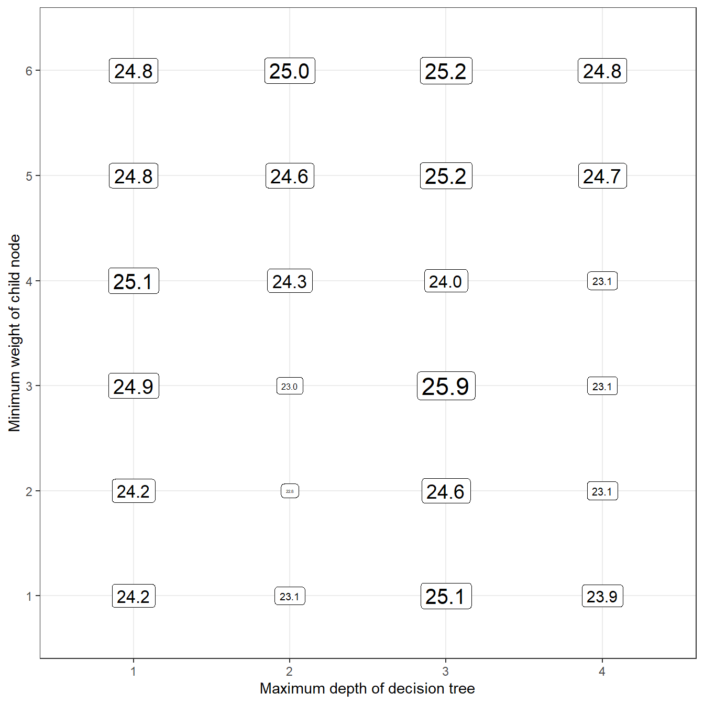

xgboost.surv
Gradient boosted decision trees are an excellent machine learning algorithm to develop prediction functions. For analyses with censored outcomes, there are a number of ways to leverage the popular and efficient R package ‘xgboost’. The xgboost.surv package provides a framework to help you engage with these types of risk prediction analyses using xgboost.
The following example shows how the xgboost.surv package can be used to fit, tune, and draw survival predictions from xgboost decision tree ensembles. We start by loading packages needed for the analysis.
library(xgboost.surv)
library(survival)
library(xgboost)
library(prodlim)
library(tibble)
library(dplyr)
#>
#> Attaching package: 'dplyr'
#> The following object is masked from 'package:xgboost':
#>
#> slice
#> The following objects are masked from 'package:stats':
#>
#> filter, lag
#> The following objects are masked from 'package:base':
#>
#> intersect, setdiff, setequal, union
library(purrr)
library(pec)This data is from the Mayo Clinic trial in primary biliary cirrhosis (PBC) of the liver conducted between 1974 and 1984. A total of 424 PBC patients, referred to Mayo Clinic during that ten-year interval, met eligibility criteria for the randomized placebo controlled trial of the drug D-penicillamine. The first 312 cases in the data set participated in the randomized trial and contain largely complete data. The additional 112 cases did not participate in the clinical trial, but consented to have basic measurements recorded and to be followed for survival. Six of those cases were lost to follow-up shortly after diagnosis, so the data here are on an additional 106 cases as well as the 312 randomized participants.
The current analysis will split the data into two sets (a training set and testing set). In the code block below, we load and split the pbc data:
data('pbc', package = 'survival')
# remove id column and modify status so that
# 0 = lost to follow-up or transplant
# 1 = died
df_analysis <- as_tibble(pbc) %>%
mutate(status = as.numeric(status==2)) %>%
select(-id)
# create vector that contains row numbers
# that will be used in the training set.
nobs <- nrow(df_analysis)
set.seed(329)
train_index <- sample(
x = 1:nobs,
size = as.integer(nobs * 3/4),
replace = FALSE
)
df_train <- df_analysis[train_index, ]
df_test <- df_analysis[-train_index, ]Using the training set, we will develop a number of xgboost survival models with different sets of tuning parameters. The parameters we will consider are the maximum depth of decision trees (max_depth) and the minimum sum of instance weight (hessian) needed in a child node of decision trees.
df_params <- expand.grid(
max_depth = 1:4,
eta = 0.025,
min_child_weight = seq(1, 6, by = 1)
)
as_tibble(df_params)
#> # A tibble: 24 x 3
#> max_depth eta min_child_weight
#> <int> <dbl> <dbl>
#> 1 1 0.025 1
#> 2 2 0.025 1
#> 3 3 0.025 1
#> 4 4 0.025 1
#> 5 1 0.025 2
#> 6 2 0.025 2
#> 7 3 0.025 2
#> 8 4 0.025 2
#> 9 1 0.025 3
#> 10 2 0.025 3
#> # ... with 14 more rowsas_sgb_params
The model fitting functions in xgboost rely heavily on the params argument. params should be a named list containing name-value pairs for tuning parameters that impact how decision trees are formed (e.g., params = list(max_depth = 1)). In addition to tuning parameters, task parameters can be included in params (e.g., objective = reg:logistic). This makes it possible to pass parameters into xgboost so that a prediction function will be developed for survival data. However, instructions on how to set up xgboost for survival problems are not included in the xgboost help page, which might make it difficult for analysts to use this great feature of the package. sgb_params() and as_sgb_params are helper functions that take a normal list and append two items to it:
sgb_params(max_depth = 1)
#> $max_depth
#> [1] 1
#>
#> $objective
#> [1] "survival:cox"
#>
#> $eval_metric
#> [1] "cox-nloglik"
as_sgb_params(list(max_depth = 1))
#> $max_depth
#> [1] 1
#>
#> $objective
#> [1] "survival:cox"
#>
#> $eval_metric
#> [1] "cox-nloglik"One major advantage of using these functions is that you won’t have to remember the text fields of ‘survival:cox’ and ‘cox-nloglik’! I have used xgboost in survival analyses for ~2 years and I still can’t remember these. The code below modifies our data grid of tuning parameters by turning each row into a list, then passing each list into the as_sgb_params function.
cat_herding
A necessary pre-processing step for datasets with ‘text’ variables is dummy coding. For example, the column named sex in pbc contains values of ‘f’ and ‘m’ for females and males, respectively. xgboost requires columns like this be coded as a collection of numeric indicator columns, e.g. sex_m = 1 if sex = male, and 0 otherwise.
Often, training data have a categorical variable with a rare value that occurs only in the training data and not the testing data. This will cause an error when the model looks for a certain variable in the testing data and doesn’t see it. The xgboost.surv package provides three functions to deal with categorical variables (cats): cat_spread, cat_transfer, and cat_gather. In the code below, we use the first two of these functions to avoid dummy columns being created in the training data and not the testing data.
sgb_label
Survival analysis outcomes are based on two numeric vectors: time and status. time indicates time until the event, and status indicates what event occurred. Generally, status = 1 indicates that the event of interest occurred, and status = 0 indicates censoring. xgboost models require these columns be combined into a single vector of time values. Specifically, censored observations in this vector will have negative time values, while non-censored observations will have positive time values. The sgb_label function creates this type of vector when given time and status values:
sgb_data and sgb_fit
The interface for providing data to xgboost functions is slightly different from the standard interface given by the stats package, i.e., providing a data.frame object comprising all of the analysis variables. Instead, xgboost functions require the following inputs:
A matrix (not a data.frame) where each column is a predictor variable.
A numeric vector of labels (i.e., values of the outcome variable).
Side note: Another option is to supply an xgb.DMatrix object, but xgboost will automatically complete this task if 1. and 2. above are supplied.
It can be a little clunky to go from a data.frame to a matrix + a numeric vector. To make the workflow a little cleaner, sgb_data and as_sgb_data can be applied directly to a data.frame and give back the exact components that xgboost functions need.
xgb_train <- as_sgb_data(xgb_train, time = time, status = status)
xgb_test <- as_sgb_data(xgb_test, time = time, status = status)Now that the data are ready, we can call sgb_fit, a wrapper to the xgboost function, to fit our models. Since we have nrow(df_params) models to fit, we use the purrr::map function to fit one model for each set of tuning parameters.
fits <- map(
.x = prm_list,
.f = function(.params){
sgb_fit(
sgb_df = xgb_train,
params = .params,
nrounds = 100,
verbose = FALSE
)
}
)
# take a peek at the contents of an sgb_booster
enframe(fits[[1]])
#> # A tibble: 4 x 2
#> name value
#> <chr> <list>
#> 1 fit <xgb.Bstr>
#> 2 label <dbl [313]>
#> 3 eval_times <dbl [82]>
#> 4 training_predictions <dbl [313]>Now we use the predict function to generate predicted survival probabilities for the testing data. Prediction of survival probability for the Cox proportional hazards model requires an estimate of the baseline hazard function as well as log-hazard predicted values. Fortunately, the gbm package offers a handy function to estimate baseline hazard values, and xgboost.surv leverages this function internally.
prds <- map(
.x = fits,
.f = predict,
new_data = xgb_test
)
# survival predictions at
# first 5 times,
# for first 5 patients,
# using the first sgb_booster
prds[[1]][1:5,1:5]
#> [,1] [,2] [,3] [,4] [,5]
#> [1,] 0.9578512 0.9562684 0.9546850 0.9530895 0.9514761
#> [2,] 0.9635731 0.9622010 0.9608279 0.9594441 0.9580443
#> [3,] 0.9647897 0.9634625 0.9621344 0.9607957 0.9594417
#> [4,] 0.8387128 0.8330665 0.8274467 0.8218131 0.8161456
#> [5,] 0.8486009 0.8432675 0.8379568 0.8326306 0.8272699A user may want to specify when survival predictions should be computed (e.g., at 1, 2, and 3 years in the future). This feature can be set using the eval_times input to the predict function for sgb_booster objects. If eval_times are unspecified, a default set of evaluation times based on the training data event times will be used, and those times are saved as an attribute of the predicted survival probability matrix:
eval_bscore
A widely used metric for assessing accuracy of risk predictions in the integrated Brier score (IBS). The way that IBS applies to survival models is somewhat technical, but it is essentially an average of standard Brier scores across time (recall that survival models can make risk predictions at any given time in the future). Standard Brier scores are similar to squared error in that they are based on the squared difference between observed status (1 or 0) and predicted probability (a number between 1 and 0). Therefore, a Brier score of 0 would indicate a perfect model. The code below computes a Brier score for the first sgb_booster we fit:
Of course, we don’t really know how to interpret the value of a non-zero Brier score without some context. Generally, it is okay to use a Kaplan-Meier survival curve as a reference model, and compare the Brier score of a current model to that of the Kaplan-Meier curve. This is what happens when we set scale = TRUE:
Scaled Brier scores range from negative infinity to 1 (but you will rarely see values below 0). A value of 1 indicates a perfect model, and a value less than zero indicates that the model was less informative than the reference model. Let’s take a look at our collection of models and see which one had the highest scaled integrated Brier score for predictions of the testing data:
library(ggplot2)
df_params %>%
mutate(
# compute brier scores
sbri = map_dbl(
.x = prds,
eval_bscore,
label = xgb_test$label
)
) %>%
# make x, y axes variables factors
# (this makes the axes look a little cleaner)
mutate(
max_depth = factor(max_depth),
min_child_weight = factor(min_child_weight)
) %>%
# use ggplot to draw a grid of tuning parameters
# and print the Brier score values for each set
# of tuning parameters on that grid.
ggplot(
aes(
x = max_depth,
y = min_child_weight,
size = sbri,
label = format(round(100*sbri, 1), nsmall = 1))
) +
geom_label(color = 'black') +
theme_bw() +
theme(legend.position = '') +
labs(
x = 'Maximum depth of decision tree',
y = 'Minimum weight of child node'
)